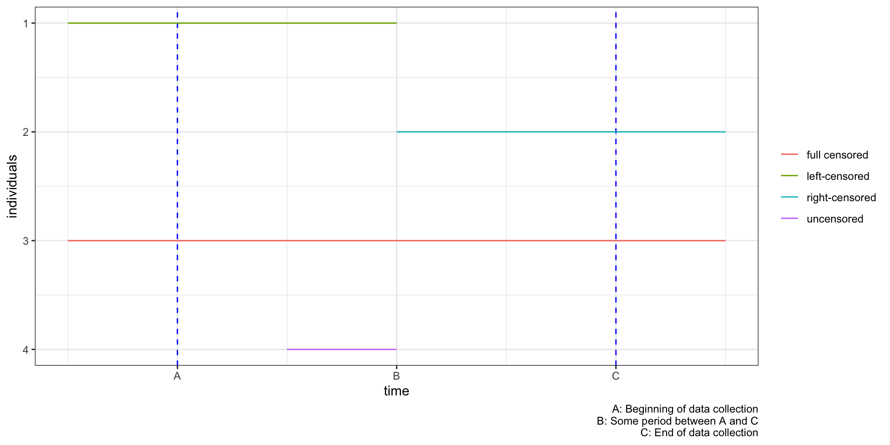
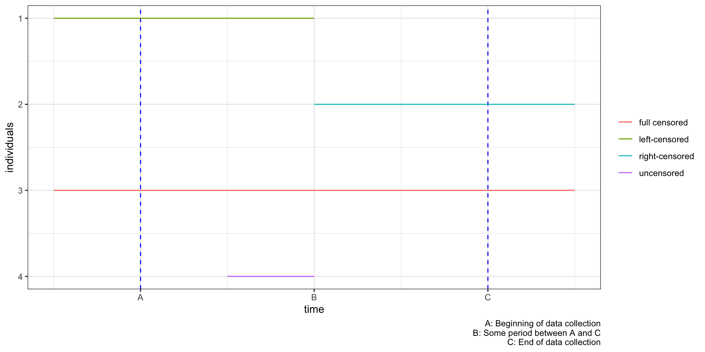

The traditional regression approach specifies a probability distribution for the duration time and fits it using data. The hazard approach, on the other hand, determines the probability of the outcome as a sequence of simpler conditional events.
(Conditional sequential probabilities vs Unconditional direct probability distribution)\[\lambda(u) = \frac{P(u < t \leq u+\delta u|t>u)}{\delta u}\] Meaning) Given that the spell wasn’t lifted by \(t = u\), the probability of the spell being lifted in \(\delta u\) divided by the interval, \(\delta u\).
Note that \(P(u\leq t)\) is the CDF of the time from the beginning of the spell to the termination of the spell. Denote it by \(F(t)\). Then,
\[\begin{align} \lambda(u) &= \frac{P(u < t \leq u+\delta u|t>u)}{\delta u}\\ &=\frac{P(t \leq u+\delta u) - P(t \leq u)}{\delta u \times P(t>u)}\\ &=\frac{1}{1-F(u)}\cdot\frac{F(u+\delta u)-F(u)}{\delta u} \stackrel{\delta u \to 0^{+}}{=}\frac{f(u)}{1-F(u)} \end{align}\]
Kiefer(1988) states that every hazard function has an exact mathematical equivalent in terms of an unconditional probability distribution.
By solving the differential equation,
\[f(u) = \lambda(u)\cdot exp\left[-\int_0^u \lambda(s)ds \right]\]
The survivor function is defined as \(S(u) = 1-F(u)\).
(i.e. the probability of spell being sustained until \(t=u\))
Thus,
\[\begin{align} \lambda(u) &= \frac{f(u)}{1-F(u)}\\ &= \frac{f(u)}{S(u)} = \frac{dF/du}{S(u)}\\ &= \frac{-dS/du}{S(u)} = -\frac{dlnS(u)}{du} \end{align}\] Here, we can think of the survivor function as the endurance probability of a spell.
RMK) Notice that if we could consistently estimate \(S(u)\), we can also consistently estimate \(\lambda(u)\) given that differentiability and continuity of the derivative are guaranteed.
RMK) Notice that rate parameters describe the frequency or intensity of a random event in a unit time, which is equivalent to how we defined the hazard function itself.
Weibull distribution permits a monotonically increasing/decreasing hazard function, which either describes the “snowballing” effect or the “inerital” effect. Weibull survival functions are determined by two parameters: \(\alpha\) and \(\sigma\).
The log-normal model assumes that the log of a survival time follows a normal distribution. Such model allows the hazard to be non-monotonic.
The problem with parametric methods is that under misspecified models(i.e. misspecified functional form of the hazard), the estimator is inconsistent of the actual hazard. Also it is often the case that the underlying model is difficult to specify. In such cases, we can rely on nonparametric hazard estimations.
Among multiple nonparametric approaches, we only cover the Cox proportional-hazards model. Cox (1972) proposes a model that doesn’t require the distribution of survival durations to be known, at the cost of not estimating the hazard function itself.
However, it is actually a semi-parametric approach in that it assumes a functional form in the regression on exogenous variables, which will be discussed shortly.
\[ h_i(t) = h_0(t)exp\left[\beta_1X_{i1} +\cdots +\beta_kX_{ik}\right]\]
\(h_0(t)\)
: the baseline hazard \(\to\) doesn’t require functional form
\(exp(\sum_{j=1}^k\beta_jX_{ij})\)
: effects of covariates \(\to\) specifying the functional form
\[\log h_i(t) = \log h_0(t) + \beta_1X_{i1} + \cdots + \beta_kX_{ik}\]
\(\beta_j = \frac{\partial \log h_i(t)}{\partial X_{ij}}\), which means that the regression coefficient is the partial derivative of the log-hazard w.r.t. the covariate.
(Equivalently, \(\beta_j\) denotes the percentage change of the hazard w.r.t. the unit change of the covariate)
\[ h_i(t) = h_0(t)exp\left[\beta_1X_{i1} +\cdots +\beta_kX_{ik}\right]\]
\(h_0(t)\)
: the baseline hazard \(\to\) doesn’t require functional form
\(exp(\sum_{j=1}^k\beta_jX_{ij})\)
: effects of covariates \(\to\) specifying the functional form
We show two different definitions of hazard ratios depending on the context, although they are closely related to each other.
RMK) The PH model assumes that this ratio is constant, and one group’s (or individual’s) hazard is proportional and time-independent to the other.
The Cox PH model assumes that the hazard ratio is constant. Suppose there are two individuals \(p\) and \(q\). Then,
\[\begin{align} \begin{cases} h_p(t) = h_0(t)e^{X_{p}'\beta}\\ h_q(t) = h_0(t)e^{X_{q}'\beta} \end{cases} \end{align}\]
which implies
\[\begin{align} \text{hazard ratio} = exp\left[(X_p-X_q)'\beta\right] \end{align}\]that the hazard ratio is independent of the baseline hazard and time. Equivalently, the log-hazard ratio(\(\log h_p(t) - \log h_q(t)\)) is also constant.
\[ h_i(t) = h_0(t)exp\left[\beta_1X_{i1} +\cdots +\beta_kX_{ik}\right]\]
\(h_0(t)\)
: the baseline hazard \(\to\) doesn’t require functional form
\(exp(\sum_{j=1}^k\beta_jX_{ij})\)
: effects of covariates \(\to\) specifying the functional form
We estimate the coefficients through partial likelihood estimation(ple). PLE is equivalent to MLE, but we only consider the likelihoods of the data that experienced the event.
In the data of observations with their spell ended, we are seeing that particular observation’s spell ended at a given time while other else’s spells could have ended at that time also. The likelihood could be described by the next question:
“Given that the spell lift happened at time \(u\), what’s the probability that it happened to the individual \(A\)?”
\[\begin{align} L_A &= \frac{h_A(u)}{\sum_{i\text{'s spell not ended before u}}h_i(u)}\\ &=\frac{h_0(t)e^{\beta_1X_{A1}+\cdots+\beta_kX_{Ak}}}{h_0(t)(e^{\beta_1X_{A1}+\cdots+\beta_kX_{Ak}} +\sum_{i(\neq A)\text{'s spell not ended before u}}e^{\beta_1X_{i1} +\cdots + \beta_kX_{ik}})}\\ &=\frac{e^{\beta_1X_{A1}+\cdots+\beta_kX_{Ak}}}{e^{\beta_1X_{A1}+\cdots+\beta_kX_{Ak}} +\sum_{i(\neq A)\text{'s spell not ended before u}}e^{\beta_1X_{i1} +\cdots + \beta_kX_{ik}}} \end{align}\]
Censoring issues are what could happen in the data we hold. It indicates the event(lift of the spell) not being observed for some individuals within the study time period. We call such individuals censored observations. This problem arises may arise in three possible ways:

However, note that in the case of right censoring, it doesn’t dissipate all valuable information, but sheds light on the information of survival probability for a given duration.
All the codes and exercise materials are from STHDA.
coxphcoxph(formula, data, ties) helps create the Cox proportional hazard regressions in R.
formula: Linear model with a survival object as the response variable. Survival object is created using the function Surv() as follow: Surv(time, event).data: the dataties: used to specify how to handle ties(the default option efron is usually the most preferred)SurvSurv(time, event)
time: Follow up timeevent: normally 0=alive, 1=dead inst time status age sex ph.ecog ph.karno pat.karno meal.cal wt.loss
1 3 306 2 74 1 1 90 100 1175 NA
2 3 455 2 68 1 0 90 90 1225 15
3 3 1010 1 56 1 0 90 90 NA 15
4 5 210 2 57 1 1 90 60 1150 11
5 1 883 2 60 1 0 100 90 NA 0
6 12 1022 1 74 1 1 50 80 513 0Call:
coxph(formula = Surv(time, status) ~ sex, data = lung)
n= 228, number of events= 165
coef exp(coef) se(coef) z Pr(>|z|)
sex -0.5310 0.5880 0.1672 -3.176 0.00149 **
---
Signif. codes: 0 '***' 0.001 '**' 0.01 '*' 0.05 '.' 0.1 ' ' 1
exp(coef) exp(-coef) lower .95 upper .95
sex 0.588 1.701 0.4237 0.816
Concordance= 0.579 (se = 0.021 )
Likelihood ratio test= 10.63 on 1 df, p=0.001
Wald test = 10.09 on 1 df, p=0.001
Score (logrank) test = 10.33 on 1 df, p=0.001exp(coef): hazard ratiosCall:
coxph(formula = Surv(time, status) ~ age + sex + ph.ecog, data = lung)
n= 227, number of events= 164
(1 observation deleted due to missingness)
coef exp(coef) se(coef) z Pr(>|z|)
age 0.011067 1.011128 0.009267 1.194 0.232416
sex -0.552612 0.575445 0.167739 -3.294 0.000986 ***
ph.ecog 0.463728 1.589991 0.113577 4.083 4.45e-05 ***
---
Signif. codes: 0 '***' 0.001 '**' 0.01 '*' 0.05 '.' 0.1 ' ' 1
exp(coef) exp(-coef) lower .95 upper .95
age 1.0111 0.9890 0.9929 1.0297
sex 0.5754 1.7378 0.4142 0.7994
ph.ecog 1.5900 0.6289 1.2727 1.9864
Concordance= 0.637 (se = 0.025 )
Likelihood ratio test= 30.5 on 3 df, p=1e-06
Wald test = 29.93 on 3 df, p=1e-06
Score (logrank) test = 30.5 on 3 df, p=1e-06Recall that \(h(u) = -\frac{dlnS(u)}{du}\), which implies
\[\begin{align} S(t) &= e^{-\int_0^th(u)du}\\ &=e^{-\int_0^th_0(u)exp(X'\beta)du}\\ &=e^{-\int_0^th_0(u)du \cdot exp(X'\beta)}\\ &= S_0(t)^{exp(X'\beta)} \end{align}\]
To estimate such survival probabilities and plot them, we first need the baseline hazard and the following baseline survivability via other methods.
In the survival package, the baseline survival and hazard are first estimated by the Breslow estimator.
hazard time
1 0.003963022 5
2 0.015948084 11
3 0.019992796 12
4 0.028188936 13
5 0.032333588 15
6 0.036493082 26